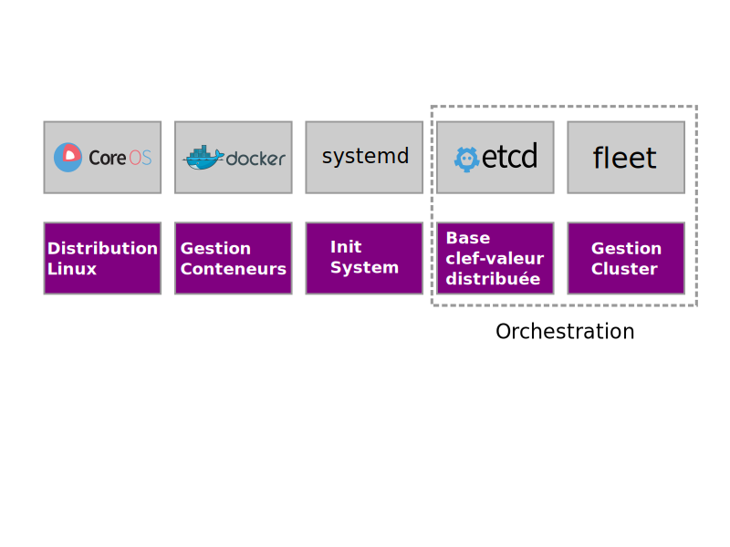
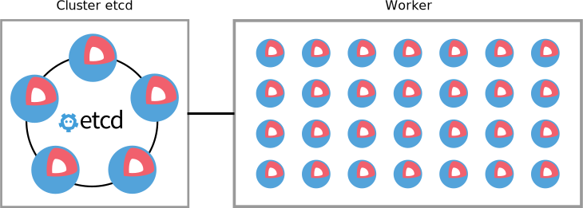

Du concept à la mise en production

Présentation CoreOS de @CattGr est mis à disposition selon les termes de la licence Creative Commons Attribution 4.0 International
En 40 minutes ou plus
- Présentation de CoreOS
- Installation avec Cloud Config
- Etcd
- Fleet
- Quel type d'application?
- Outils annexes
Présentation de
Comparaison entre un Hyperviseur et CoreOS
Briques CoreOS
Architecture CoreOS

Docker c'est quoi déjà ?
CoreOS Cloud-init
Ou comment installer vos serveurs CoreOS sans rien installer.
Cloud Config
CoreOS-cloudinit permet à un administrateur de personnaliser ses machines CoreOS en fournissant un document Cloud Config au format YAML.
#cloud-config
coreos:
units:
- name: etcd2.service
command: start
users:
- name: core
passwd: $1$allJZawX$00S5T756I5PGdQga5qhqv1
write_files:
- path: /etc/resolv.conf
content: |
nameserver 192.0.2.2
nameserver 192.0.2.3
dhcp pxe/ipxe
Nous avons mis en place un serveur ipxe qui fournit à chaque serveur CoreOS son image de boot et son fichier cloud-init.
Le serveur obtient ces informations via le serveur dhcp.
host coreos1 {
hardware ethernet 1e:3f:4e:53:1f:52;
next-server 10.0.0.11;
fixed-address 10.0.0.21;
server-name "coreos1.mondomaine";
if exists user-class and option user-class = "iPXE" {
filename "http://10.0.0.11:4777/?profile=production";
} else {
filename "undionly.kpxe";
}
}
Images ipxe
Les images sont téléchargés sur le site de CoreOS. Une version de CoreOS est spécifié pour chaque profile.
Exemple de fichier config: production.json
# cat production.json
{
"cloud_config": "production",
"console": ["tty0", "tty1"],
"coreos_autologin": "tty1",
"rootfstype": "btrfs",
"root": "LABEL=ROOT",
"sshkey": "coreos",
"version": "681.0.0"
}
Channels CoreOS
| Stable | Beta | Alpha |
|---|---|---|
| Le canal Stable est utilisable en production. Chaque nouvelle version livrée a été longuement testée. | Dans le canal Beta, on retrouve les versions Alpha ayant une certaine stablilité. | Le canal Alpha suit de près le travail de développement en cours et est mise à jour fréquemment. Les dernières versions de docker , ETCD et fleet seront disponibles pour les tests. |
- API Http en lecture/écriture via curl ou etcdctl.
- Clefs et valeurs stockées dans une arboresence comme dans un système de fichier.
- Supervision d'une clef ou d'un répertoire pour détecter un changement.
- Possibilité de fixer un verrou ou une durée de vie (TTL).
- Découverte des nœuds (static, etcd, dns).
Positionner une valeur
- $ ssh 10.0.0.1
CoreOS beta (xxx.x.x) - $ etcdctl set /foo "Hello world"
Hello world - $ curl -L -X PUT http://127.0.0.1:2379/v2/keys/bar -d value="Hello world"
{"action":"set","node":{"key":"/bar","value":"Hello world","modifiedIndex":1943007,"createdIndex":1943007}}
Récupérer une valeur
- $ ssh 10.0.0.1
CoreOS beta (xxx.x.x) - $ etcdctl get /foo
Hello world - $ curl -L http://127.0.0.1:2379/v2/keys/bar
{"action":"get","node":{"key":"/bar","value":"Hello world","modifiedIndex":1943007,"createdIndex":1943007}}
Cluster Etcd
Pour un déploiement large (supérieur à 10 nœuds) il est conseillé d'avoir un nombre de bases etcd limité, afin de ne pas passer trop de temps à obtenir le corum.
Cluster actif etcd et tolérance de panne
| Membre(s) Actif(s) | Majorité | Tolérance de panne |
|---|---|---|
| 1 membre | 1 membre | Aucune |
| 3 membres | 2 membres | 1 membre |
| 4 membres | 3 membres | 1 membre |
| 5 membres | 3 membres | 2 membres |
| 6 membres | 4 membres | 2 membres |
| 7 membres | 4 membres | 3 membres |
| 8 membres | 5 membres | 3 membres |
| 9 membres | 5 membres | 4 membres |
Fleet
Fleet permet de gérer sur l'ensemble d'un cluster CoreOS, les fichiers systemd.
Ordonnancement avec Fleet
La directive systemd [X-Fleet] permet d'étendre le fonctionnement des scripts systemd.
- Global: lance un unit systemd sur l'ensemble des nœuds.
- MachineMetadata: lance un unit que sur certains membres du cluster (en fonction du Metadata)
- Conflits: permet d'exclure 2 units incompatibles tournent sur le même serveur.
- MachineOf: inversement, permet de lier 2 units ensemble sur un même serveur.
Fleet + etcd
- Fleet a besoin d'une vue complète du cluster afin de répartir ces units sur l'ensemble des nœuds actif.
- Quels units tournent sur le serveur?
- Quelles machines fonctionnent dans le cluster?
- Chaque fichier unit, chaque état des process, état des machines sont stockés dans etdc.
Fleetctl list-machines
Pour que fleet fonctionne, la base etcd doit être accessible en lecture/écriture.
core@coreos1 ~ $ fleetctl list-machines MACHINE IP METADATA 32a89c4b... 10.0.0.21 location=dsi,plateform=kvm,version=681.0.0 9b2fc7d5... 10.0.0.22 location=dsi,plateform=kvm,version=681.0.0 ff9f347b... 10.0.0.23 location=dsi,plateform=kvm,version=681.0.0 c93c01c0... 10.0.0.24 location=dsi,plateform=kvm,version=681.0.0
Exemple service Global: cadvisor.service
[Unit] Description=Google Container Advisor Requires=docker.socket After=docker.socket [Service] ExecStartPre=/bin/sh -c "docker history google/cadvisor:latest >/dev/null || docker pull google/cadvisor:latest" ExecStart=/usr/bin/docker run --rm --volume=/:/rootfs:ro --volume=/var/run:/var/run:rw --volume=/sys:/sys:ro --volume=/var/lib/docker/:/var/lib/docker:ro --publish=8080:8080 --name=cadvisor google/cadvisor:latest Restart=always RestartSec=20s [Install] WantedBy=multi-user.target [X-Fleet] Global=true
Gestion des units avec fleetctl
core@coreos1 ~ $ fleetctl load cadvisor.service Triggered global unit cadvisor.service load core@coreos1 ~ $ fleetctl list-unit-files UNIT HASH DSTATE STATE TARGET cadvisor.service 85f57eb loaded - global core@coreos1 ~ $ fleetctl start cadvisor.service Triggered global unit cadvisor.service start core@coreos1 ~ $ fleetctl list-units UNIT MACHINE ACTIVE SUB cadvisor.service 32a89c4b.../10.0.0.21 active running cadvisor.service 9b2fc7d5.../10.0.0.22 active running cadvisor.service c93c01c0.../10.0.0.24 active running cadvisor.service ff9f347b.../10.0.0.23 active running core@coreos1 ~ $ fleetctl stop cadvisor.service Triggered global unit cadvisor.service stop
CoreOS OK, mais pour quel type d'application
The Twelve Factors
12 recommandations pour un déploiement sans soucis.
|
|
Codebase
- Tout code doit être géré par un logiciel de suivie de version (git, mercurial, ...)
- Une application = code source
Dependencies
- Toutes les dépendances doivent être clairement précisées.
- Le système cible n'est pas sensé contenir de programme pré-installé.
- Pas de dépendances implicite.
Config
- Est considéré comme configuration, tous ce qui diffère d'un environnement à l'autre (dev, qualif, prod, autre site).
- Tout élément de configuration doit être passé par des variables d'environnement.
- Il ne doit y avoir absolument aucune référence à la configuration dans le code.
Backing Services
- Un backing service est une ressource accessible du réseau (base mysql, smtp, activemq, memcache...)
- L'accès à ces ressources doit être passé en paramètre.
- Pas de distinction entre les services locaux et distant.
Build, release, run
- On recrée l'application et l'environnement avant chaque déploiement d'une nouvelle version.
- Aucune modification n'est apporté sur l'application déployée.
- Chaque version déployée a un numéro de version unique (timestamp, numero de commit, ...)
Processes
- L'application est exécutée dans l'environnement d'exécution en tant que un ou plusieurs processus.
- Toutes les données doivent être stockées dans une ressource externe (base de données).
- Les variables de sessions utilisateurs ne doivent jamais être stockées localement.
Port binding
- L'application fournit un service qui écoute sur un port.
Concurrency
- Chaque application peut être mise à l'echelle. Les conteneurs peuvent être lancés x fois pour répartir la charge.
- Le programme dans le conteneur ne doit pas être lancé en tâche de fond.
- L'arrêt du programme entraîne l'arrêt du conteneur.
Disposability
- Le conteneur doit être jetable.
- Il doit donc pouvoir être lancé très rapidement.
- Un arrêt intempestif ne doit pas compromettre les données.
Dev/prod parity
- Le développeur doit pouvoir déployer rapidement le code qu'il vient de finir d'écrire.
- Le développeur doit être plus proche du déploiement (DevOps).
- Maintenir le développement et la production aussi semblables que possible en utilisant les mêmes outils.
- Éviter de prendre des backends différents en prod et en dev (ex: base de données, ...) pour éviter les surprises en production.
Logs
- Les applications doivent externaliser leurs journaux pour la visualisation et l'archivage à long terme (ELK, Spunk, rsyslog ...).
- Les journaux peuvent s'afficher dans la sortie standard de l'application, mais pas dans un fichier du conteneur.
Admin process
- Les commandes d'administration doivent s'exécuter dans un environnement identique aux autres processus d'exploitation.
- Même conteneur, même variables d'environnement, mais en mode interactif.
12-factors c'est bien mais...
... Comment le mettre en oeuvre de façon efficace.
Les Micro-services
Un système distribué basé sur des micro-services qui communiquent via des files de messages.
- Plein de Micro-services plutôt qu'un programme monolithique.
- Chaque Micro-service fait une seule chose mais le fait bien (Philosophie Unix).
- Les Micro-services sont déployés indépendamment.
- Ils communiquent en utilisant des files de messages (ex AMQP).
Outils annexes
- A: